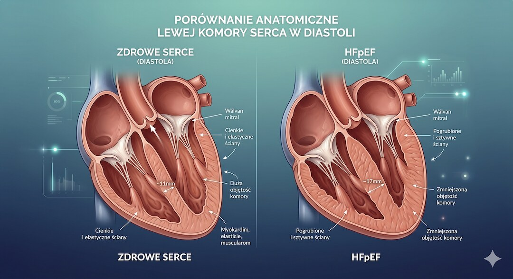
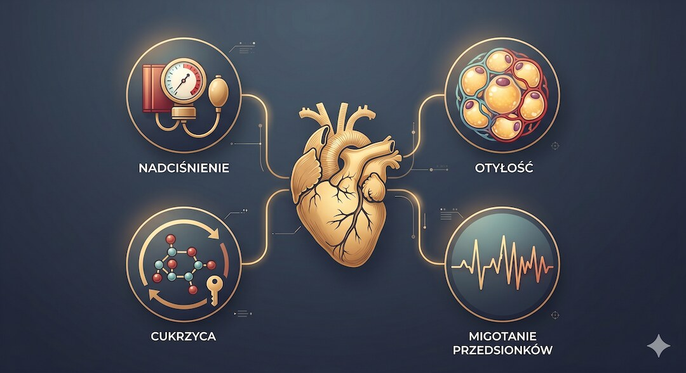

Wyobraź sobie, że twoje serce pompuje krew sprawnie – jak silnik, który nie traci mocy. Lekarz ogląda wynik echa i mówi: "Frakcja wyrzutowa prawidłowa, 60 procent, wszystko w porządku." A ty wychodzisz z gabinetu z ulgą – i wciąż nie wiesz, dlaczego wchodzenie po schodach odbiera ci dech, a nogi wieczorami puchną jak dwa bochny chleba. Nazywa się to HFpEF – niewydolność serca z zachowaną frakcją wyrzutową – i dotyka ponad połowy wszystkich chorych na serce po pięćdziesiątce, częściej kobiet niż mężczyzn, a diagnoza potrafi uciec nawet doświadczonemu kardiologowi.
Szybka odpowiedź
Po 50-tce warto patrzeć na zdrowie szerzej: liczą się nie tylko objawy, ale też mechanizmy, profilaktyka i spokojne decyzje oparte na danych. Ten artykuł porządkuje najważniejsze fakty, pokazuje najczęstsze pułapki i ułatwia przełożenie wiedzy na codzienną praktykę bez niepotrzebnego stresu i bez chaosu.
Kluczowe wnioski
Kluczowe wnioski po 50-tce warto rozłożyć na praktyczne kroki i odnieść do codziennych decyzji.
- HFpEF to niewydolność serca, w której serce pompuje normalnie, ale jest za sztywne, żeby się rozluźnić – dlatego echo może wyglądać prawidłowo, a pacjent mimo to się dusi.
- Ponad 50% wszystkich przypadków niewydolności serca to właśnie HFpEF – choroba dotyczy szczególnie kobiet po 50. roku życia z nadciśnieniem, otyłością lub cukrzycą.
- Diagnozę stawia się nie tylko na podstawie echa, ale też badania krwi (peptydy natriuretyczne BNP/NT-proBNP) i testu wysiłkowego – same echo to za mało.
- Regularna aktywność fizyczna i kontrola chorób towarzyszących (ciśnienie, cukier, masa ciała) to dziś najsilniejsze narzędzia spowalniające HFpEF – nowe leki z grupy SGLT2 dają dodatkową nadzieję.
Co to znaczy, że serce "nie chce się rozluźnić"? Proste wyjaśnienie HFpEF?
Zacznijmy od podstaw – tak prosto, jak tylko się da. Twoje serce to pompa, która pracuje w rytmie skurczów i rozkurczów. Skurcz to moment, kiedy serce ściska się i wyrzuca krew do ciała – i właśnie tę siłę mierzy frakcja wyrzutowa (EF).
Rozkurcz to chwila relaksu: serce rozluźnia się i napełnia świeżą krwią przed kolejnym uderzeniem. W HFpEF skurcz jest całkowicie sprawny – dlatego frakcja wyrzutowa wynosi normalnie powyżej 50 procent i.
Wyobraź sobie gumową piłeczkę – miękką, łatwo się ściska i rozszerza. To zdrowe serce. Teraz wyobraź sobie piłeczkę z grubszej gumy – wciąż możesz ją ścisnąć z pełną siłą, ale sama z siebie wraca wolniej i nie rozszerza się tak szeroko. Właśnie to dzieje się w HFpEF: ściana serca (głównie lewej komory) grubnieje i twardnieje z wiekiem, przez nadciśnienie, cukrzycę lub nadwagę, a serce wypełnia się mniejszą ilością krwi. Aby zrekompensować ten niedobór, ciśnienie wewnątrz serca rośnie – i to ono wywołuje objawy: duszność, obrzęki, zmęczenie. Nadciśnienie tętnicze po 50. jest jednym z głównych czynników ryzyka tej choroby i wymaga osobnej uwagi.
Według wytycznych American College of Cardiology z 2023 roku HFpEF definiuje się jako kliniczny obraz niewydolności serca przy frakcji wyrzutowej lewej komory wynoszącej co najmniej 50 procent. Sama obecność dysfunkcji rozkurczowej w echo nie jest tożsama z rozpoznaniem HFpEF – potrzebne są też objawy kliniczne oraz obiektywny dowód podwyższonego ciśnienia napełniania lewej komory. To właśnie ta złożoność sprawia, że choroba bywa przeoczana.
- Frakcja wyrzutowa (EF) mierzy, ile procent krwi serce wypycha przy każdym uderzeniu – w HFpEF EF wynosi powyżej 50%, czyli "normalnie".
- Problem polega na tym, że serce jest zbyt sztywne, by prawidłowo się napełnić krwią – to dysfunkcja rozkurczowa.
- Podwyższone ciśnienie wewnątrz serca przedostaje się do płuc i naczyń – stąd duszność, obrzęki nóg i zmęczenie.
- Samo badanie echo w spoczynku może wyglądać zupełnie normalnie, nawet przy zaawansowanej chorobie.

Jak powszechna jest ta choroba i dlaczego dotyka częściej kobiet po 50?
HFpEF to nie jest rzadkość – to rzeczywiście epidemia. Według raportu Heart Failure Society of America z 2024 roku niewydolność serca z zachowaną frakcją wyrzutową odpowiada za ponad 50 procent wszystkich przypadków niewydolności serca. Co ważniejsze, podczas gdy ogólna liczba zachorowań na niewydolność serca w krajach rozwiniętych stabilizuje się lub
spada, udział HFpEF stale rośnie – głównie dlatego, że starzeje się populacja i przybywa otyłości, nadciśnienia i cukrzycy. Szacuje się, że wśród.
Kobiety chorują na HFpEF dwukrotnie częściej niż mężczyźni. W szwedzkim rejestrze obejmującym blisko 43 tysiące pacjentów kobiety stanowiły 55 procent chorych z HFpEF, ale tylko 29 procent chorych z niewydolnością serca ze zmniejszoną frakcją wyrzutową. Wynika to ze sposobu, w jaki żeńskie serce reaguje na nadciśnienie: zamiast się powiększać (jak często dzieje się u mężczyzn), lewa komora grubnieje i twardnieje – a to prosta droga do HFpEF. Po menopauzie, gdy spada ochronne działanie estrogenów, ryzyko gwałtownie wzrasta. Menopauza a zdrowie serca – to temat, który każda kobieta po 50. powinna znać.
Chorobę napędza też wielochorobowość: badania pokazują, że prawie połowa pacjentów z HFpEF ma co najmniej pięć istotnych chorób towarzyszących jednocześnie. Nadciśnienie tętnicze, otyłość, migotanie przedsionków, cukrzyca typu 2, przewlekła choroba nerek, bezdech senny – każda z tych chorób osobno uszkadza serce, a razem tworzą podłoże, na którym HFpEF rozwija się niepostrzeżenie przez lata. Dlatego HFpEF nazywa się "chorobą chorób" – to swoisty produkt końcowy starzenia się ciała obciążonego wieloma schorzeniami.
- HFpEF stanowi ponad 50% wszystkich przypadków niewydolności serca – to najczęstszy jej rodzaj.
- Kobiety po 50. chorują na HFpEF dwa razy częściej niż mężczyźni w tym samym wieku.
- Główne czynniki ryzyka: nadciśnienie, otyłość, cukrzyca, migotanie przedsionków, wiek powyżej 60 lat.
- Prawie połowa chorych z HFpEF ma równocześnie 5 lub więcej poważnych chorób towarzyszących.
- Prevalencja rośnie wraz z wiekiem – u kobiet po 80. roku życia może sięgać 10%.
Jakie objawy mogą świadczyć o HFpEF? Kiedy zasapanie to nie "tylko wiek"?
Największym problemem z HFpEF jest to, że jej objawy łatwo zbagatelizować. Duszność przy wchodzeniu po schodach, szybkie męczenie się podczas spaceru, opuchnięte kostki wieczorem – wielu z nas przypisuje to po prostu wiekowi, nadwadze albo gorszej kondycji.
A tymczasem mogą to być sygnały, że serce nie radzi sobie z wysiłkiem. Według dokumentu AHA i ACC z 2023 roku o ćwiczeniach w HFpEF nietolerancja wysiłku jest głównym objawem przewlekłej, stabilnej HFpEF – i.
Porównanie do kobiet jest tu szczególnie ważne: badania wykazały, że kobiety z HFpEF zgłaszają duszność wysiłkową i nietolerancję wysiłku częściej i intensywniej niż mężczyźni przy tej samej zaawansowanej chorobie. Mają też większy deficyt w rezerwach układu sercowo-naczyniowego podczas wysiłku, co przekłada się na gorszą jakość życia mierzoną standaryzowanymi kwestionariuszami (KCCQ, MLWHF). Do typowych objawów HFpEF należą: duszność pojawiająca się przy minimalnym wysiłku (wchodzenie po schodach, szybki marsz), uczucie ciężkości i obrzęki nóg szczególnie pod wieczór, nocna duszność zmuszająca do spania na kilku poduszkach, szybkie bicie serca przy wysiłku oraz uczucie ogólnego wyczerpania, które nie mija po odpoczynku. Obrzęki nóg po 50. mogą mieć wiele przyczyn – warto je skonsultować z lekarzem.
Ważne jest też to, czego nie widać: otyłość maskuje objawy HFpEF. U osób z wysokim BMI poziomy peptydów natriuretycznych (BNP, NT-proBNP) – kluczowych markerów przeciążenia serca – mogą być fałszywie niskie. Dlatego zgodnie z wytycznymi ACC z 2023 roku u otyłego pacjenta z dusznością wysiłkową klinicysta musi zachować wysoką czujność diagnostyczną nawet przy prawidłowym BNP. Otyłość nie tylko maskuje chorobę – jest też jednym z jej głównych napędów.
- Duszność podczas wchodzenia po schodach lub szybkiego marszu – jeśli pojawiła się w ostatnich miesiącach lub nasiliła się, warto to zbadać.
- Obrzęki kostek i podudzi pojawiające się pod wieczór, a znikające po nocy – to sygnał podwyższonego ciśnienia w naczyniach.
- Nocna duszność, konieczność spania na kilku poduszkach lub z uniesionym wezgłowiem łóżka.
- Szybkie bicie serca przy małym wysiłku (np. rozmowie w czasie marszu).
- Uczucie wyczerpania, które nie ustępuje po odpoczynku i nie ma innego wyjaśnienia.
- U osób otyłych: brak powyższych objawów w spoczynku nie wyklucza HFpEF.
Dlaczego echo serca "niczego nie widzi"? Jak naprawdę diagnozuje się HFpEF?
To jest serce tej sprawy – dosłownie i w przenośni. Wiele osób wychodzi z echokardiografii z wynikiem "frakcja wyrzutowa 60%, serce w normie" i czuje się bezpiecznie. Ale echo w spoczynku mierzy głównie to, jak serce ściska się , a nie jak rozkurczuje .
Parametry dysfunkcji rozkurczowej (jak stosunek E/e' czy objętość lewego przedsionka) mogą być graniczne lub nawet prawidłowe w spoczynku, a ujawniać się dopiero pod obciążeniem. Według wytycznych ACC/AHA z.
Pierwszym kluczowym puzzlem są peptydy natriuretyczne: BNP lub NT-proBNP to hormony wydzielane przez przeciążone serce. Podwyższony poziom BNP (powyżej 35 pg/ml) lub NT-proBNP (powyżej 125 pg/ml) jest ważnym sygnałem alarmowym – ale uwaga: u osób otyłych poziomy te są często fałszywie niskie, co może prowadzić do przeoczenia choroby. Dlatego u grubszego pacjenta kliniczne podejrzenie HFpEF powinno być wysokie nawet przy granicznych wartościach peptydów. Drugim puzzlem jest echo – nie tylko frakcja wyrzutowa, ale też ocena lewego przedsionka, funkcji rozkurczowej i ciśnienia napełniania. Trzecim, często decydującym puzzlem, jest echo wysiłkowe lub cewnikowanie serca – ocena hemodynamiki pod obciążeniem. Właśnie wtedy chore serce "zdradza się": ciśnienie napełniania wzrasta nieproporcjonalnie do wysiłku, czego nie widać w spoczynku.
W praktyce klinicznej stosuje się ustrukturyzowane skale diagnostyczne: H2FPEF i HFA-PEFF, które pomagają lekarzowi usystematyzować ryzyko i zdecydować o kolejnych krokach. Warto też wiedzieć, że HFpEF ma swoje imitatory – choroby, które wyglądają podobnie, ale wymagają innego leczenia: amyloidoza serca, kardiomiopatia przerostowa, choroby zastawkowe. Dlatego nie każdy przypadek duszności z prawidłowym EF to HFpEF, i dlatego diagnoza powinna należeć do specjalisty kardiologa. Jakie badania serca zrobić po 50? – przeczytaj nasz przegląd.
- BNP lub NT-proBNP w badaniu krwi – podwyższone wartości świadczą o przeciążeniu serca (uwaga: u otyłych mogą być fałszywie niskie).
- Echo serca – nie tylko frakcja wyrzutowa, ale też parametry rozkurczu: E/e', objętość lewego przedsionka, prędkość niedomykalności trójdzielnej.
- Echo wysiłkowe – ocena, jak zmienia się ciśnienie napełniania serca podczas wysiłku; często "demaskuje" HFpEF.
- Cewnikowanie prawego serca – złoty standard diagnostyczny, stosowany gdy wyniki są niejednoznaczne.
- Skala H2FPEF i HFA-PEFF – narzędzia pomagające lekarzowi oszacować prawdopodobieństwo choroby przed decyzją o zaawansowanych badaniach.
Co napędza HFpEF? Czyli jak nadciśnienie, cukrzyca i nadwaga uszkadzają serce po cichu?
HFpEF rzadko spada jak grom z jasnego nieba. To choroba, która dojrzewa latami – cicho, bez bólu, bez wyraźnych sygnałów alarmowych. Jej fundamentem jest przewlekłe zapalenie niskonasilone i stwardnienie małych naczyń serca. Nadciśnienie tętnicze zmusza lewą komorę do pracy pod stałym nadmiernym obciążeniem – tak jak mięsień, który ćwiczy z wielokrotnie za dużymi ciężarami.
Z czasem ściana serca grubnieje (przerost mięśnia sercowego), staje się mniej elastyczna i traci zdolność do swobodnego rozluźniania..
Cukrzyca typu 2 jest jeszcze podstępniejsza. Hiperglikemia uszkadza śródbłonek naczyń, zaburza metabolizm mięśnia sercowego i przyspiesza odkładanie kolagenu w ścianach serca – a kolagen to substancja nieresprężysta, która zamienia elastyczne mięśnie w coraz mniej podatną "gumę". Badania z 2023 roku opublikowane w PMC (Boston University) pokazują, że u osób z otyłością i HFpEF biomarkery zapalne (IL-6, CRP) oraz wskaźniki insulinooporności (HOMA-IR) są istotnie wyższe i korelują z gorszą tolerancją wysiłku. Migotanie przedsionków – coraz częstsze po 60. roku życia – dodatkowo komplikuje obraz: nieregularny rytm nie daje sercu wystarczająco dużo czasu na napełnienie się krwią między uderzeniami, co nasila objawy. Cukrzyca a zdrowie serca – te dwie choroby są ze sobą ściśle powiązane.
Warto też wiedzieć, że bezdech senny – bardzo często nierozpoznany u osób z nadwagą po 50. – jest niezależnym czynnikiem ryzyka HFpEF. Każdy epizod bezdechu powoduje gwałtowne wahania ciśnienia wewnątrzklatka, przeciążające serce nocą. Wytyczne ACC z 2023 roku wprost zalecają diagnostykę bezdechu sennego u każdego pacjenta z podejrzeniem HFpEF. Jeśli chrapiesz lub budzisz się niewyspany, powiedz o tym kardiologowi.
- Nadciśnienie tętnicze: zmusza serce do ciągłej nadpracy, co prowadzi do przerostu i stwardnienia ściany lewej komory.
- Otyłość: tkanka tłuszczowa produkuje substancje prozapalne niszczące mikronaczynia serca i nasilające jego sztywność.
- Cukrzyca typu 2: hiperglikemia przyspiesza odkładanie kolagenu w mięśniu sercowym i uszkadza naczynia wieńcowe.
- Migotanie przedsionków: nieregularny rytm nie daje sercu czasu na pełne napełnienie – nasila duszność i zmęczenie.
- Bezdech senny: nocne epizody bezdechu przeciążają serce i naczynia – powinien być zbadany u każdego z podejrzeniem HFpEF.

Czy HFpEF można leczyć? Co naprawdę działa – ćwiczenia, leki i zmiana stylu życia?
HFpEF przez lata była nazywana "chorobą bez leczenia" – i rzeczywiście, wiele prób klinicznych kończyło się neutralnymi wynikami. To się zmienia. Dziś wiemy, że regularna aktywność fizyczna to jedno z najskuteczniejszych narzędzi, jakie mamy. Wspólne oświadczenie naukowe AHA i ACC z 2023 roku poświęcone wyłącznie ćwiczeniom w HFpEF wskazuje, że
nadzorowany trening aerobowy poprawia tolerancję wysiłku w stopniu porównywalnym lub nawet wyższym niż u pacjentów z klasyczną niewydolnością serca ze zmniejszoną frakcją.
Na froncie farmakologicznym przełomem ostatnich lat są leki z grupy inhibitorów SGLT2 (empagliflozyna, dapagliflozyna). Badania kliniczne EMPEROR-Preserved i DELIVER wykazały, że obniżają one ryzyko hospitalizacji z powodu zaostrzenia niewydolności serca u chorych z HFpEF. Dlatego zarówno wytyczne ACC z 2023 roku, jak i wytyczne Towarzystwa Kardiologicznego Tajwanu z 2024 roku rekomendują inhibitory SGLT2 jako leki pierwszego rzutu dla chorych z HFpEF. Warto wiedzieć, że leki te pierwotnie stworzono dla cukrzyków, a ich korzystny wpływ na serce okazał się działaniem dodatkowym – ale dla pacjentów z HFpEF jest to dobra wiadomość. Kontrola nadciśnienia tętniczego do poziomu skurczowego ciśnienia poniżej 130 mmHg, leczenie migotania przedsionków oraz leki moczopędne przy objawach zastoju to kolejne filary terapii.
Nowe dane z 2023 i 2025 roku dotyczą agonistów GLP-1 (semaglutyd, tirzepatyd): w badaniach klinicznych u otyłych pacjentów z HFpEF (STEP-HFpEF, SUMMIT) pokazały one znaczącą poprawę tolerancji wysiłku, jakości życia i zmniejszenie masy ciała. Tirzepatyd w badaniu SUMMIT (opublikowanym w NEJM w 2025 roku) zmniejszył ryzyko hospitalizacji z powodu niewydolności serca lub zgonu. Badania te dotyczą jednak konkretnych podgrup (otyłość + HFpEF) i nie zastępują standardowego leczenia – każda decyzja terapeutyczna musi być podejmowana indywidualnie z kardiologiem. Aktywność fizyczna po 50. – jak zacząć bezpiecznie – praktyczny przewodnik Grześka dla każdego.
- Ćwiczenia aerobowe (30–45 minut, 3–5 razy w tygodniu, umiarkowane tempo) – najsilniej udokumentowane narzędzie poprawy jakości życia w HFpEF.
- Inhibitory SGLT2 (empagliflozyna, dapagliflozyna) – rekomendowane przez wytyczne ACC, AHA i ESC jako leki zmniejszające ryzyko hospitalizacji.
- Kontrola ciśnienia tętniczego – cel: poniżej 130/80 mmHg; nieopanowane nadciśnienie napędza postęp choroby.
- Leki moczopędne – przy objawach zatrzymania wody (obrzęki, duszność) przynoszą ulgę objawową.
- Redukcja masy ciała – szczególnie ważna przy otyłości; badania z agonistami GLP-1 pokazują korzyści w tej podgrupie.
- Leczenie bezdechu sennego – poprawa jakości snu zmniejsza nocne przeciążenie serca.
Życie z HFpEF – jak monitorować chorobę i kiedy wracać do specjalisty?
Rozpoznanie HFpEF nie jest wyrokiem. Wielu pacjentów przez lata prowadzi normalne, aktywne życie – pod warunkiem, że chorobą aktywnie zarządzają. Samoobserwacja to tutaj kluczowa umiejętność. Codzienne ważenie się rano, przed posiłkiem i po oddaniu moczu, pozwala wychwycić wczesne zatrzymanie wody: przyrost powyżej 1–1,5 kg w ciągu jednej doby lub 2–3
kg w ciągu dwóch–trzech dni to sygnał, żeby zadzwonić do lekarza, bo może to oznaczać zaostrzenie. Regularne mierzenie ciśnienia tętniczego w domu.
W kwestii wizyt lekarskich: wytyczne ACC z 2023 roku zalecają skierowanie do kardiologa, jeśli lekarz rodzinny stwierdza współistniejącą chorobę wieńcową lub migotanie przedsionków, potrzebę zwiększenia dawek leków moczopędnych, klasę NYHA III–IV (znaczne ograniczenie aktywności) lub podwyższone peptydy natriuretyczne. Do specjalisty ds. niewydolności serca warto się udać w przypadku nietolerancji leczenia, zaostrzeń wymagających hospitalizacji lub gdy choroba szybko postępuje. Nie ma nic złego w tym, żeby poprosić o skierowanie do specjalisty nawet bez wyraźnego wskazania – jeśli czujesz, że coś jest nie tak, masz do tego prawo.
Pamiętaj też o corocznych badaniach laboratoryjnych: morfologia, elektrolity, kreatynina i eGFR (ocena funkcji nerek), kontrola glukozy i HbA1c, lipidogram. HFpEF to choroba, która lubi towarzystwo – a jej "przyjaciele" (cukrzyca, przewlekła choroba nerek, anemia) mogą nasilać objawy, zanim zauważysz ich obecność. Dobrze prowadzona dokumentacja medyczna – zeszyt z wynikami ciśnienia, wagi, leków – to Twój najlepszy sojusznik w rozmowie z lekarzem.
- Ważenie się codziennie rano – przyrost ponad 2 kg w 2–3 dni to sygnał alarmowy wymagający kontaktu z lekarzem.
- Mierzenie ciśnienia dwa razy dziennie – zapisuj wyniki; cel to poniżej 130/80 mmHg.
- Corocznie: morfologia, elektrolity, kreatynina, eGFR, HbA1c, lipidogram.
- Skonsultuj się z kardiologiem przy nasileniu duszności, migotaniu przedsionków lub wzroście dawek leków moczopędnych.
- Nie rezygnuj z aktywności – ale dostosuj tempo do możliwości i zawsze po konsultacji z lekarzem.
- Szczepienie na grypę i COVID-19 – infekcje są częstą przyczyną zaostrzeń niewydolności serca.
Najczęściej zadawane pytania
Najczęściej zadawane pytania po 50-tce warto rozłożyć na praktyczne kroki i odnieść do codziennych decyzji.
Czym różni się HFpEF od zwykłej niewydolności serca?
W klasycznej niewydolności serca (HFrEF) serce pompuje zbyt słabo – frakcja wyrzutowa spada poniżej 40%. W HFpEF serce pompuje z normalną siłą (EF powyżej 50%), ale jest zbyt sztywne, żeby prawidłowo się napełnić przed każdym uderzeniem. To jak różnica między pompą, która ma słaby tłok, a pompą, która ma tłok sprawny, ale zbiornik jest zbyt mały. Objawy mogą być podobne – duszność, obrzęki, zmęczenie – ale przyczyna i leczenie różnią się istotnie.
Powiązane tematy: trening siłowy, dieta po 50-tce, sen i regeneracja, suplementacja.
Powiązane tematy: trening siłowy, dieta po 50-tce, sen i regeneracja, suplementacja.
Czy prawidłowe echo serca wyklucza HFpEF?
Nie. To jeden z najczęstszych i najgroźniejszych mitów. Echo w spoczynku mierzy głównie funkcję skurczową (jak serce się ściska), a nie rozkurczową (jak się rozluźnia i napełnia). Parametry dysfunkcji rozkurczowej mogą być prawidłowe w spoczynku i ujawniać się dopiero podczas wysiłku. Dlatego wytyczne ACC z 2023 roku jasno stwierdzają, że nie istnieje żadne pojedyncze badanie wykluczające HFpEF. Diagnoza wymaga połączenia: objawów klinicznych, peptydów natriuretycznych (BNP/NT-proBNP), oceny rozkurczu w echo i niekiedy testu wysiłkowego.
Jakie badania zleci kardiolog przy podejrzeniu HFpEF?
Kardiolog prawdopodobnie zleci oznaczenie peptydów natriuretycznych (BNP lub NT-proBNP) w surowicy krwi, szczegółowe echo serca z oceną funkcji rozkurczowej (stosunek E/e', objętość lewego przedsionka, prędkość niedomykalności trójdzielnej), EKG oraz badania laboratoryjne (morfologia, elektrolity, kreatynina, glukoza). Przy niejednoznacznych wynikach może rozważyć echo wysiłkowe lub cewnikowanie prawego serca. Pomocniczo stosuje się skale H2FPEF i HFA-PEFF do oceny prawdopodobieństwa rozpoznania.
Czy ćwiczenia są bezpieczne przy HFpEF?
Tak – i co więcej, są jednym z najskuteczniejszych dostępnych narzędzi leczenia. Wspólne oświadczenie AHA i ACC z 2023 roku wskazuje, że nadzorowany trening aerobowy poprawia tolerancję wysiłku i jakość życia w stopniu porównywalnym lub wyższym niż u chorych z klasyczną niewydolnością serca. Zaleca się umiarkowane ćwiczenia aerobowe (chód, nordic walking, rower, pływanie) 3–5 razy w tygodniu po 30–45 minut. Przed rozpoczęciem programu konieczna jest konsultacja kardiologiczna i ewentualnie test wysiłkowy, aby ustalić bezpieczną intensywność.
Dlaczego kobiety po menopauzie są bardziej narażone na HFpEF?
Estrogeny działają ochronnie na naczynia krwionośne i mięsień sercowy – hamują stan zapalny, poprawiają elastyczność naczyń i zmniejszają skłonność do przerostu lewej komory. Po menopauzie spadek estrogenów usuwa tę ochronę. Żeńskie serce reaguje na nadciśnienie inaczej niż męskie: zamiast się powiększać, lewa komora grubnieje i twardnieje – co bezpośrednio predysponuje do HFpEF. Badania w szwedzkim rejestrze potwierdzają, że kobiety stanowią 55% chorych z HFpEF, podczas gdy w niewydolności serca ze zmniejszoną frakcją wyrzutową stanowią zaledwie 29%.
Jakie leki stosuje się w HFpEF?
Według wytycznych ACC z 2023 roku i AHA/ACC/HFSA z 2022 roku inhibitory SGLT2 (empagliflozyna, dapagliflozyna) są dziś lekami o najsilniejszym udokumentowaniu skuteczności w HFpEF – zmniejszają ryzyko hospitalizacji z powodu zaostrzenia niewydolności serca. Leki moczopędne stosuje się przy objawach zatrzymania wody. Nadciśnienie leczy się preparatami obniżającymi ciśnienie do wartości poniżej 130/80 mmHg. U otyłych pacjentów z HFpEF rozważane są agoniści GLP-1 (semaglutyd, tirzepatyd). Nie ma natomiast dowodów na skuteczność ACE-inhibitorów i beta-blokerów w samym HFpEF – inaczej niż w HFrEF.
Źródła
Źródła po 50-tce warto wdrażać krok po kroku i od razu łączyć teorię z praktyką. Dzięki temu łatwiej utrzymać regularność, poprawić bezpieczeństwo działań i szybciej zauważyć trwałe efekty zdrowotne w codziennym życiu.
- Kittleson MM et al., ACC Expert Consensus Decision Pathway on Management of HFpEF, Journal of the American College of Cardiology, 2023
- StatPearls – Heart Failure With Preserved Ejection Fraction, NCBI Bookshelf, aktualizacja marzec 2024
- Heidenreich PA et al., 2022 AHA/ACC/HFSA Guideline for the Management of Heart Failure, Circulation, 2022
- Mahmood A et al., HFpEF management: systematic review of clinical practice guidelines, European Heart Journal Quality of Care and Clinical Outcomes, 2024
- Lau ES et al., A Disease of Her Own? Unique Features of Heart Failure in Women, Climacteric, 2024
- Bunsawat K et al., Exercise intolerance in HFpEF: Causes, consequences and the journey towards a cure, Experimental Physiology, 2024
- AHA/ACC Scientific Statement – Supervised Exercise Training for Chronic HFpEF, PMC, 2023
- Bozkurt B et al., HF STATS 2024: Heart Failure Epidemiology and Outcomes Statistics, Journal of Cardiac Failure, 2024
- Tsai CC et al., 2024 Guidelines of the Taiwan Society of Cardiology for the Diagnosis and Treatment of HFpEF, PMC, 2024
- Ho JE et al., Obesity-related biomarkers and exercise intolerance in HFpEF, Circulation Heart Failure, 2023
Uwaga: Artykuł ma charakter informacyjny i edukacyjny. Nie zastępuje konsultacji lekarskiej, diagnozy ani leczenia.